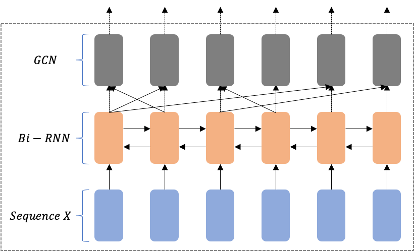

class: middle, inverse layout: true --- ## A Study of Keyphrases Extraction & Generation ### Eunhwan Park ### judepark@kookmin.ac.kr ### 20. 09. 04. --- layout: false .left-column[ ### Baseline Experiments ] .right-column[ Baseline experiments is consist of 3 models. - One Size Does Not Fit All (CatSeqD) - Exclusive Hierarchical Decoding for Deep Keyphrase Generation (ExHiRD) - BERT-based Span Extraction (BERT-SE) ] --- layout: false .left-column[ ### Baseline Experiments ] .right-column[ One Size Does Not Fit All (CatSeqD) - Semantic Coverage - Orthogonal Regularization - Exhaustive Decoding Results | | KP20K | Inspec | SemEval |----------|-------------|------|-- | F1@5 | 0|0|0 | F1@10 | 0 | 0 | 0 ] --- layout: false .left-column[ ### Baseline Experiments ] .right-column[ Exclusive Hierarchical Decoding for Deep Keyphrase Generation (ExHiRD) - Hierarchical Decoding Process Results | | KP20K | Inspec | SemEval |----------|-------------|------|-- | F1@5 | 0| 0 | 0 | F1@10 | 0 | 0 | 0 ] --- layout: false .left-column[ ### Baseline Experiments ] .right-column[ BERT-based Span Extraction (BERT-SE) - BERT Embedding - Span Extraction Approach Results | | KP20K |----------|-------------| | F1@span_start | 45.61 | | F1@span_end | 45.64 | ] --- layout: false .left-column[ ### Baseline Experiments ### GCN-based Representation ] .right-column[ Training high-level hidden feature for nodes through Graph Convolutional Network (GCN) Inputs - Adjacency Matrix 𝐴, Node-Feature Matrix 𝑋 GCN layer formula is follows as $$H^{(l+1)} = \sigma(AH^lW^l+b^l)$$ Main process is follows as: $$\text{Embed(x)} \rightarrow \text{GCN Layer} \rightarrow \text{Graph Representation G}$$ Reference - [DivGraphPointer: A Graph Pointer Network for Extracting Diverse Keyphrases](https://arxiv.org/abs/1905.07689) - [Graph Convolutional Network for Text Classification](https://arxiv.org/abs/1809.05679) ] --- layout: false .left-column[ ### Baseline Experiments ### GCN-based Representation ] .right-column[ Graph Construction - The basic assumption is that the closer two words in a sentence, the stronger their relation. How to construct adjacency matrix? ```python adj = torch.zeros([n, n]) for i, offset_i in enumerate(tokens): for j, offset_j in enumerate(tokens): if i == j: continue adj[i][j] = np.maximum(0, (1 / (offset_i - offset_j))) adj += torch.eye(n, n) return normalize_graph(adj) ``` But, usually construct adjacency matrix through dependency parse tree. ] --- layout: false .left-column[ ### Baseline Experiments ### GCN-based Representation ] .right-column[ Build encoder as GCN, not RNN-based! ```python class GCNLayer(nn.Module): def __init__(self, input_dim: int, output_dim: int) -> None: super(GCNLayer, self).__init__() self.W_f = nn.Parameter(torch.randn(input_dim, output_dim)) self.W_b = nn.Parameter(torch.randn(input_dim, output_dim)) self.W = nn.Parameter(torch.randn(input_dim, output_dim)) def forward(self, x: torch.Tensor, a_f: torch.Tensor, a_b: torch.Tensor): h_f = torch.bmm(a_f, x).matmul(self.W_f) h_b = torch.bmm(a_b, x).matmul(self.W_b) h_w = torch.matmul(x, self.W) f_h = h_f + h_b + h_w return x + (f_h * torch.sigmoid(f_h)) ``` Advantage of GCN-based Encoder: - We can explicitly leverage the short- and long-term dependency between words. But, there is some issues: - Restrict the output to the nodes of the graph. ] --- layout: false .left-column[ ### Baseline Experiments ### GCN-based Representation ] .right-column[ Build encoder as combining GCN and RNN. <center></center> <center><p>Figure 1. Illustration of RNN + GCN</p></center> ] --- layout: false class: middle, inverse # <center>Thank you</center>